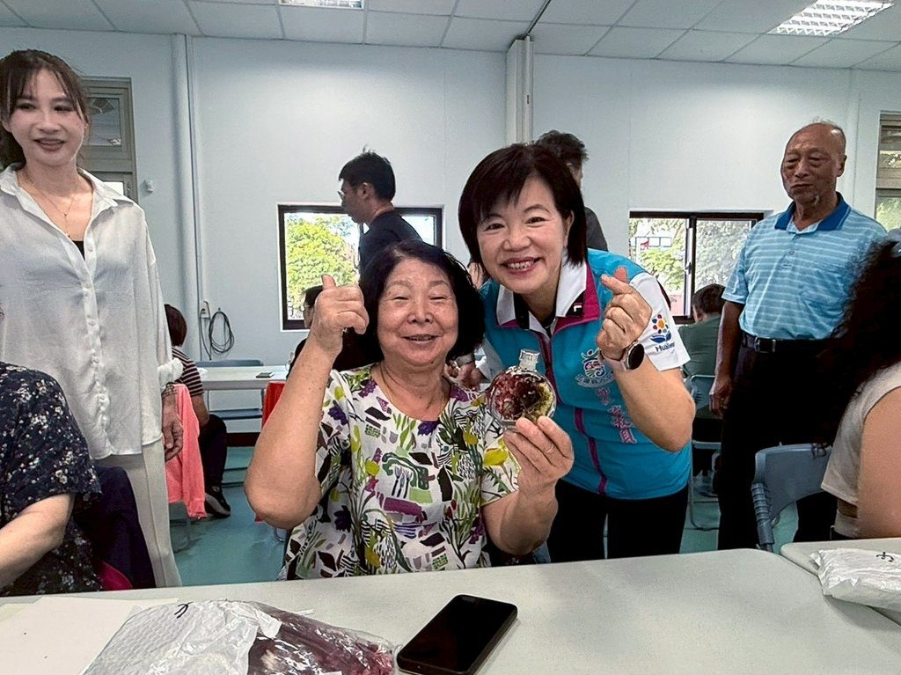

點亮吉安！游淑貞陪伴鄉親手作浮游花夜燈 療癒光影凝聚社區情感

可樂電子報小編/編輯
為推廣社區藝文、美感教育與手作文化，吉安鄉公所攜手花蓮縣電氣裝置業職業工會，日前於吉安好客藝術村舉辦「浮游花夜燈手作課程」。透過療癒的手作體驗，引導鄉親培養美感素養，吸引五十餘位親子熱情參與。

課程邀請具豐富經驗的羅筠箴老師授課，帶領學員運用玻璃瓶、花材及透明專用油，製作專屬的浮游花夜燈。羅老師分享，浮游花在光線映照下能呈現如精靈翅膀般的晶透光澤，讓創作者在過程中沉澱心情，感受手作帶來的療癒力量。

鄉長游淑貞也到場與鄉親熱情互動，仔細了解製作過程並逐一點亮夜燈。她讚美大家完成的作品十分精美，花影隨著油材輕輕流動，讓好客藝術村充滿溫暖的光影與歡笑聲。

活動選在充滿歷史文化底蘊的好客藝術村，花蓮縣電氣裝置業職業工會理事長陳宏名感謝公所長期推動地方藝術與建設，提供優質的研習環境。許多鄉親也表示，專業導覽員不僅形塑了浪漫的氛圍，更讓吉安豐富的文化被看見。

游淑貞強調，公所將持續支持多元社區及客家文化活動，希望透過手作藝術豐富精神生活。她也歡迎大眾多加利用好客藝術村辦理各類課程與社團活動，共同打造兼具文化、美學與觀光特色的幸福吉安。